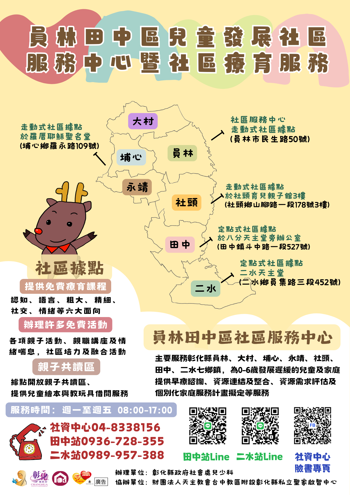
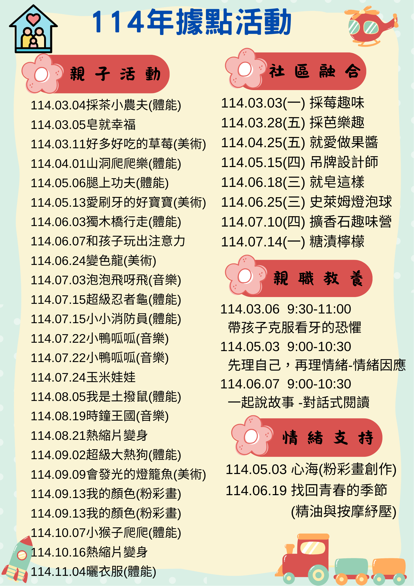

請使用瀏覽器開啟
如使用
LINE
開啟網頁，請點選右下角的
三個點
圖標， 選擇
使用瀏覽器開啟
，否則頁面部分功能會失效。
員林田中區兒童發展社區
首頁
社區融合
114.03.03(一) 採莓趣味
114.03.28(五) 採芭樂趣
114.04.25(五) 芒果青製作
114.05.15(四) 吊牌設計師
114.05.21(二) 龍貓音樂盒
114.06.13(五) 就愛做果醬
114.06.18(三) 就皂這樣
114.07.08(二) 擴香石趣味營
親子活動
114.03.04 採茶小農夫
114.03.05 皂就幸福
114.03.11 好多好吃的草莓
114.04.01 山洞爬爬樂
114.05.06 腿上功夫
114.05.13 愛刷牙的好寶寶
114.06.03 獨木橋行走
114.06.07 和孩子玩出注意力
114.06.24 愛刷牙的好寶寶
114.07.03 泡泡飛呀飛
114.07.15 超級忍者龜
114.07.15 小小消防員
114.07.22 小鴨呱呱1
114.07.22 小鴨呱呱2
114.07.24 玉米娃娃
親子活動(8月後)
114.08.05 我是土撥鼠
114.08.19 時鐘王國
114.08.21 熱縮片變身
114.09.02 超級大熱狗
114.09.09 會發光的燈籠魚
114.09.13 我的顏色1
114.09.13 我的顏色2
114.10.07 小猴子爬爬
114.10.16 熱縮片變身
114.11.04 曬衣服
親職教養
114.03.06帶孩子克服看牙的恐懼
114.05.03先理自己，再理情緒-談情緒因應
114.06.07一起說故事-對話式閱
家長情緒支持
114.05.03 心海
114.06.19找回青春的季節
家長回饋區

